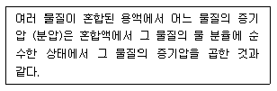
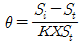
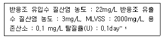
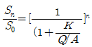
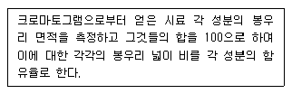
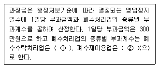
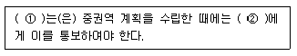

수질환경기사 (2010-03-07 기출문제)
1과목: 수질오염개론
1. 25℃, 2기압의 압력에 있는 메탄가스 20kg 을 저장하는데 필요한 탱크의 부피는? (단, 이상기체의 법칙, R=0.082 적용)
- 10.3m3
- 15.3m3
- 20.3m3
- 25.3m3
(정답률: 70%)

2. 진핵세포에 관한 설명으로 옳지 않은 것은?
- 유사분열이 아닌 분리분열을 한다.
- 세포소기관으로 미토콘드리아, 엽록체, 액포 등이 존재한다.
- 핵막이 있다.
- 리보솜은 80S(예외:미토콘드리아와 엽록체는 70S)이다.
(정답률: 61%)
3. 하천 모델의 종류에 관한 설명으로 옳지 않은 것은?
- Streeter-Phelps Model:점오염원으로부터 오염부하량 고려
- WQRRS:하천 및 호수의 부영양화를 고려한 생태계 모델
- DO SAG-I:확산을 고려한 1차원 정상 모델로 저니나 광합성에 의한 DO 반응 고려
- QUAL-I:유속, 수심, 조도계수 등에 의한 확산계수를 산출하고 유체와 대기 간의 열교환 고려
(정답률: 65%)
4. 해수의 성분에 관한 설명으로 옳지 않은 것은?
- 해수의 염분은 극 해역 보다 적도 해역이 높다.
- Cl-은 해수에 녹아 있는 성분 중 가장 많은 양을 차지한다.
- 해수 내 성분 중 나트륨 다음으로 가장 많은 성분을 차지하는 것은 칼륨이다.
- 해수 내 전체 질소 중 35% 정도는 암모니아성 질소, 유기질소 형태이다.
(정답률: 62%)
5. 다음 수질을 가진 농업용수의 SAR값은? (단, Na+=230mg/ℓ, PO43-=1500mg/ℓ,CL-=108mg/ℓ, Ca++=600mg/ℓ, Mg++=240mg/ℓ, NH3-N=380mg/ℓ, Na 원자량:23, P 원자량:31, Cl 원자량:35.3, Ca 원자량:40, Mg 원자량:24)
- 2
- 4
- 6
- 8
(정답률: 56%)
6. PbSO4의 용해도는 물 1L당 0.038g이 녹는다면 PbSO4의 용해도적(Ksp)은? (단, Pb 원자량 207)
- 약 1.3×10-8
- 약 1.3×10-9
- 약 1.6×10-8
- 약 1.6×10-9
(정답률: 56%)
7. 336mg/L 의 CaCl2 농도를 meq/L 로 환산하면 얼마인가? (단, Ca 원자량: 40, Cl 원자량:35.5)
- 약 6
- 약 8
- 약 10
- 약 12
(정답률: 58%)
8. 완전혼합 흐름 상태에 관한 설명 중 옳은 것은?
- 분산이 1일 때 이상적 완전혼합 상태이다.
- 분산수가 0일 때 이상적 완전혼합 상태이다.
- Morrill 지수의 값이 1에 가까울수록 이상적 완전혼합 상태이다.
- 지체시산이 이론적 체류시간과 동일할 때 이상적 완전 혼합 상태이다.
(정답률: 59%)
9. 지구상에 분포하는 수량 중 빙하(만년설포함) 다음으로 가장 많은 비율을 차지하고 있는 것은?
- 하천수
- 지하수
- 대기습도
- 토양수
(정답률: 84%)
10. 유량이 1.6m3/sec이고 BOD5가 5mg/L, DO가 9.2mg/L인 하천에 유량이 0.8m3/sec이고 BOD5가 50mg/L, DO가 5.0mg/L인 지류가 흘러들어 가고 있다. 합류된 하천의 유속이 15m/min이면 합류 지점에서 하류로 54km 지점에서의 용존 산소 부족량은? (단, 온도 20℃, 혼합수의 k1=0.1/day, k2=0.2/day 혼합수의 포화산소농도는 약 9.2mg/L, 상용대수 적용)
- 약 4.2mg/L
- 약 5.4mg/L
- 약 6.5mg/L
- 약 7.6mg/L
(정답률: 21%)
11. 미생물 중 원생동물에 관한 설명으로 옳지 않은 것은?
- 대개 호기성이며 세포벽이 없을 때가 많다.
- 많은 원생동물은 녹조류가 진화과정에서 단지 엽록소를 상실함으로써 생긴 것으로 추측할 수 있다.
- 위족류는 매우 유동적인 세포벽을 이용하여 위족을 만든다.
- 편모충류는 몸에 1개 이상의 편모를 가지며 그것을 움직여 활발히 운동한다.
(정답률: 48%)
12. 탈산소계수(K1)가 0.20 day-1인 하천의 BOD5 농도가 100mg/L이었다. BOD3은? (단, 상용대수 기준)
- 67 mg/L
- 72 mg/L
- 78 mg/L
- 83 mg/L
(정답률: 54%)
13. 수온 20℃, 유량 20m3/sec, BOdu 5mg/L인 하천에 점오염원으로부터 유량 3m3/sec, 수온 20℃, 부하량 50g BODu/sec의 오염물질이 유입되어 완전혼합 될 때 0.5일 유하 후의 잔류 BOD는? (단, 하천의 20℃의 탈산소 계수는 0.2/day(자연대수)이고, BOD 분해에 필요한 만큼의 충분한 DO가 하천내에 존재함)
- 약 7 mg/L
- 약 6 mg/L
- 약 5 mg/L
- 약 4 mg/L
(정답률: 36%)
14. 다음 중 지하수 특성이라고 볼 수 없는 것은?
- 수온변동이 적고 자정속도가 느리다.
- 지표수에 비해 염분의 함량이 크다.
- 세균에 의한 유기물의 분해가 주된 생물작용이다.
- 자염 및 인위의 국지적 조건의 영향을 크게 받지 않는다.
(정답률: 63%)
15. Glucose 800 mg/L가 완전 산화하는데 필요한 이론적 산소 요구량은?
- 823 mg/L
- 853 mg/L
- 923 mg/L
- 953 mg/L
(정답률: 66%)
16. 어느 배양기의 제한기질농도(S)r가 100 mg/L, 세포 비증식 계수 최대값(μmax)이 0.2/hr일 때 Monod 식에 의한 세표 비증식계수(μ)는? (단, 제한기질 반포화농도(Ks)=20 mg/L)
- 0.124/hr
- 0.167/hr
- 0.183/hr
- 0.191/hr
(정답률: 63%)
17. 1차 반응에 있어 반응 초기의 농도가 100 mg/L 이고, 4시간 후에 10mg/L 로 감소되었다. 반응 3시간 후의 농도(mg/L )는?
- 17.8
- 24.8
- 31.6
- 36.8
(정답률: 61%)
18. Bacteria(C5H7O2N)의 호기성 산화과정에서 박테리아 9g 당 소요되는 이론적 산소요구량은? (단, 박테리아는 CO2, H2O, NH3로 전환됨)
- 12.7g
- 13.4g
- 14.5g
- 15.6g
(정답률: 61%)
19. 다음이 설명하는 일반적 기체 법칙은?

- 라울트의 법칙
- 게이-루삭의 법칙
- 헨리의 법칙
- 그레함의 법칙
(정답률: 60%)
20. 150kL/day의 분뇨를 산기관을 이용하여 포기하였는데 분뇨에 함유된 BOD의 20%가 제거되었다. BOD 1kg을 제거하는데 필요한 공기공급량이 40m3이라 했을 때 시간당 공기공급량은? (단, 연속포기, 분뇨의 BOD는 20000mg/L이다.)
- 100m3
- 500m3
- 1000m3
- 1500m3
(정답률: 58%)
2과목: 상하수도계획
21. 펌프 수격작용(Water hammer)의 방지대책과 가장 거리가 먼 것은?
- 펌프에 플라이 휠(fly wheel)을 붙인다.
- 토출측 관로에 표준형 조압수조를 설치한다.
- 흡입측 관로에 양방향형 수조를 설치한다.
- 압력수조를 설치한다.
(정답률: 36%)
22. 유달시간 내의 평균강우강도가 100mm/hr, 면적이 1㎢, 유출계수가 0.6인 경우, 최대계획우수유출량(m3/sec)은? (단, 합리식 적용)
- 12.6m3/sec
- 16.7/sec
- 22.4/sec
- 28.6/sec
(정답률: 60%)
23. 하수도 펌프장시설의 중력식 침사지에 대한 설명으로 옳지 않은 것은?
- 침사지의 평균 유속은 0.3m/s를 표준으로 한다.
- 체류시간은 30~60포를 표준으로 한다.
- 수심은 유효수심에 모래퇴적부의 깊이를 더한 것으로 한다.
- 우수침사자의 표면부하율은 1800m3/m2ㆍd 정도로 한다.
(정답률: 49%)
24. 하수처리를 위한 일차침전지에 관한 기준으로 옳지 않은 것은?
- 침전시간은 계획1일최대오수량을 기준으로 일반적으로 6~8시간으로 한다.
- 슬러지 수집기를 설치하는 경우의 침전지 바닥기울기는 직사각형에서 1/100~2/100으로 한다.
- 표면부하율은 계획1일최대오수량에 대하여 합류식의 경우 25~50m3/m2ㆍd로 한다.
- 유효수심은 2.5~4m를 표준으로 한다.
(정답률: 44%)
25. 정수시설중 후속되는 여과지의 부담을 경감시키기 위해 설치하는 고속응집침전지의 선택 시 고려하여야 하는 조건과 구조기준으로 옳지 않은 것은?
- 탁도와 수온의 변동이 적어야 한다.
- 용량은 계획정수량의 1.5~2.0시간분으로 한다.
- 최고 탁도는 100 NTU 이하인 것이 바람직하다.
- 처리수량의 변동이 적어야 한다.
(정답률: 49%)
26. 우물의 양수량 결정시 사용되는 “적정양수량”의 정의로 옳은 것은?
- 최대양수량의 70%이하의 양수량
- 최대양수량의 8%이하의 양수량
- 한계량의 70%이하의 양수량
- 한계량의 8%이하의 양수량
(정답률: 62%)
27. 수도관으로 사용되는 관종 중 경질염화비닐관의 장ㆍ단점으로 옳지 않은 것은?
- 특정 유기용제 및 열, 자외선에 약하다.
- 조인트의 종류에 따라 이형관 보호공을 필요로 한다.
- 저온시에 내충격성이 저하된다.
- 내면조도의 변화가 일어나기 쉽다.
(정답률: 40%)
28. 하수관거시설인 오수관거의 유속범위기준으로 옳은 것은?
- 계획시간최대오수량에 대하여 유속을 최소 0.3m/sec, 최대 3.0m/sec 로 한다.
- 계획시간최대오수량에 대하여 유속을 최소 0.6m/sec, 최대 3.0m/sec 로 한다.
- 계획1일최대오수량에 대하여 유속을 최소 0.3m/sec, 최대 3.0m/sec 로 한다.
- 계획1일최대오수량에 대하여 유속을 최소 0.6m/sec, 최대 3.0m/sec 로 한다.
(정답률: 52%)
29. 펌프의 토출유량은 1800m3/hr, 흡입구의 유속은 2m/sec일 때 펌프의 흡입구경(mm)은?
- 약 512
- 약 566
- 약 642
- 약 686
(정답률: 60%)
30. 상수처리를 위한 완속 여과지의 구조 및 형상에 대한 설명으로 옳지 않은 것은?
- 여과지 깊이는 하부집수장치의 높이에 자갈층 두께, 모래층 두께, 모래면 위의 수신과 여유고를 더하여 2.5!3.5m 표준으로 한다.
- 여과지의 형상은 직사각형을 표준으로 한다.
- 주벽이나 상단은 지반보다 15cm이상 높임으로써 여과지내로 오염수나 토사 등의 유입을 방지한다.
- 한냉지에서는 여과지 물이 동결할 염려가 있으므로 가온시설을 설치한다.
(정답률: 24%)
31. 펌프의 규정 토출량이 12m3/min, 규정 양정 8m, 규정회전수 1000회/분인 경우 이펌프의 비교회전도는?
- 692
- 728
- 874
- 917
(정답률: 58%)
32. 계획 오수량 산정시, 우리나라 하수도 시설기준상 지하수량 범위기준으로 옳은 것은?
- 1인1일 최대오수량의 5~8%
- 1인1일 최대오수량의 10~20%
- 시간 최대오수량의 5~8%
- 시간 최대오수량의 10~20%
(정답률: 60%)
33. 매설하는 금속관의 전식방지방법이 아닌 것은?
- 내부전원법
- 강제배류법
- 선택배류법
- 유전양극법(또는 희생양극법)
(정답률: 43%)
34. 도수시설에서 도수되는 원수의 수위동요를 안정시키고 원수량을 조절하는 착수정에 관한 설명으로 옳지 않는 것은?
- 착수정의 고수위와 주변벽체의 상단 간에는 60cm이상의 여유를 두어야 한다.
- 착수정의 고수의 이상으로 올라가지 않도록 제수밸브를 설치한다.
- 착수정의 용량은 체류시간 1.5분 이상으로 한다.
- 착수정의 수심은 3~5m 정도로 한다.
(정답률: 35%)
35. 슬러지농축방법의 특징에 관한 설명으로 옳지 않은 것은? (단, 중력식, 부상식, 원심분리, 중력벨트 농축 방식 비교 기준)
- 중력식 농축: 구조가 간단하고 유지관리가 용이하며 잉여슬러지 농축에 적합하다.
- 부상식 농축: 약품주입 없이도 운전이 가능하나 실내에 설치할 경우 부식문제를 유발할 수 있다.
- 원심분리 농축: 악취가 적고 운전조작이 용이하며 고농도로 농축이 가능하다.
- 중력벨트 농축: 소요면적이 크고 규격(용량)이 한정된다.
(정답률: 28%)
36. 하수관거의 단면형상이 계란형인 경우에 관한 설명으로 옳지 않은 것은?
- 유량이 작은 경우 원형거에 비해 수리학적으로 유리하다.
- 원형거에 비해 관폭이 커도 되므로 수평방향의 토압에 유리하다.
- 재질에 따라 제조비가 늘어나는 경우가 있다.
- 수직방향의 시공에 정확도가 요구되므로 면밀한 시공이 필요하다.
(정답률: 49%)
37. 하수도 계획의 목표연도는 원칙적으로 몇 년 정도로 하는가?
- 10년
- 15년
- 20년
- 25년
(정답률: 56%)
38. 하수 고도처리를 위한 급속여과법에 관한 설명과 가장 거리가 먼 것은?
- 여층의 운동방식에 의해 고정상형 및 이동상형으로 나눌 수 있다.
- 여층의 구성은 유입수와 여과수의 수질, 역세척 주기 및 여과면적을 고려하여 정한다.
- 모래여과기인 경우 여과속도는 일반적으로 300m/day 이하로 한다.
- 여재는 종류, 공극율, 비표면적, 균등계수 등을 고려하여 정한다.
(정답률: 7%)
39. 지표수의 취수를 위해 하천수를 수원으로 하는 경우 취수탑에 관한 사항으로 옳지 않은 것은?
- 대량 취수시 경제적인 것이 특징이다.
- 취수보와 달리 토사유입을 방지할 수 있다.
- 공사비는 일반적으로 크다.
- 시공시 가물막이 등 가설공사는 비교적 소규모로 할 수 있다.
(정답률: 39%)
40. 정수시설 중 응집을 위한 시설인 플록형성ㅈ의 플록형성 시간은 계획정수량에 대하여 몇 분을 표준으로 하는다?
- 0.5~1분
- 1~3분
- 5~10분
- 20~40분
(정답률: 65%)
3과목: 수질오염방지기술
41. 하수고도처리를 위한 질소제거 방법 중 단일단계 질산화(부착 성장식)에 관한 설명으로 옳지 않은 것은?
- BOD와 암모니아성 질소 동시제거 가능
- 미생물이 여재에 부착되어 잇어 안정성은 이차침정과 관련됨
- 독성물질에 대한 질산화 저해 방지 불가능
- 유출수의 암모니아 농도는 약 1~3mg/L 정도
(정답률: 8%)
42. 유기물에 의한 최종BODL 1kg을 안정화시킬 때 발생되는 메탄의 이론양은? (단, 유기물은 Glucose로 가정할 것, 완전분해 기준)
- 약 0.25 kg
- 약 0.45 kg
- 약 0.65 kg
- 약 0.85 kg
(정답률: 29%)
43. ‘펜톤처리공정’에 관한 설명으로 옳지 않은 것은?
- 펜톤시약의 반응시간은 철염과 과산화수소수의 주입 농도에 따라 변화를 보인다.
- 펜톤시약을 이용하여 난분해성 유기물을 처리하는 과정은 대체로 산화반응과 함께 pH조절, 중화 및 응집, 침전으로 크게 3단계로 나눌 수 있다.
- 펜톤시약의 효과는 pH 8.3~10 범위에서 가장 강력한 것으로 알려져 있다.
- 펜톤처리로 폐수의 COD는 감소하지만 BOD는 증가 할 수 있다.
(정답률: 39%)
44. 하수처리방식 중 회전원판법에 대한 설명으로 옳지 않은 것은?
- 운전관리상 조작이 간단하다.
- 소비 전력량이 소규모 처리시설에서는 표준 활성 슬러지법에 비하여 적다.
- 표준 활성슬러지법에 비해 이차 침정지에서 미세한 SS가 유출되기 어렵다.
- 질산화가 일어나기 쉬우며 pH가 저하되는 경우가 있다.
(정답률: 35%)
45. 분뇨의 소화슬러지 발생량은 1일 분뇨투입량의 10%이다. 발생된 소화슬러지의 탈수 전 함수율이 96%라고 하면 탈수된 소화슬러지의 1일 발생량은? (단, 분뇨추입량은 360kL/day이며 탈수된 소화 슬러지의 함수율은 72%이다. 분뇨 비중은 1.0 기준임)
- 2.47 m3
- 3.78 m3
- 4.21 m3
- 5.14 m3
(정답률: 23%)
46. 탈기법을 이용, 폐수 중의 암모니아성 질소를 제거하기 위하여 폐수의 pH를 조정하고자 한다. 수중 암모니아를 NH3(기체분자의 형태) 98%로 하기 위한 pH는? (단, 암모니아성 질소의 수중에서의 평형은 다음과 같다. NH3+H2O↔NH4++OH, 평형상수 K=1.8×10-5)
- 11.25
- 11.03
- 10.94
- 10.62
(정답률: 20%)
47. 포기조의 MLSS 농도가 2000mg/L이다. 1L실린더에 30분 동안 침전시킨 후 슬러지 부피가 150mL이라면 슬러지의 SVI는?
- 25
- 50
- 75
- 100
(정답률: 52%)
48. No3-10mg/L가 탈질균에 의해 질소가스화 될 때 소요되는 이론적 메탄올의 양(mg/L)은? (단, 기타 유기탄소원은 고려하지 않음)
- 2.8
- 3.6
- 4.3
- 5.6
(정답률: 37%)
49. 수면적 55m2의 침전지가 있다. 하루 400m3의 폐수를 침전처리 시킨다고 가정할 때 이 침전지에서 98% 제거 되는 입자의 침강속도(mm/min)는?
- 약 2 mm/min
- 약 3 mm/min
- 약 4 mm/min
- 약 5 mm/min
(정답률: 35%)
50. 인구 145000명인 도시에 적용하기 위해 완전혼합 활성슬러지 처리장을 설계하였다. 처리능력은 pilot plant를 사용하여 실험하였고 다음과 같은 데이터를 얻었다면 일차반응이고 유츨수 BOD5:10mg/L일 때 반응조 부피는? [ 유입수 유량: 360L/인-d, 유입수 BOD5: 2⑤mg/ㅣ, 1차 침전지에서 제거된 유입수 BOD5는 34%, MLSS: 3000mg/L, MLVSS는 MLSS의 75%, K: 0.926L/gMLVSS-hr ] (단,

이다.)- 약 12000m3
- 약 13000m3
- 약 14000m3
- 약 15000m3
(정답률: 23%)
51. 하수 고도처리 공법인 Phostrip 공정에 관한 설명으로 옳지 않은 것은?
- 기존 활성슬러지 처리장에 쉽게 적용 가능하다.
- 인제거시 BOD/P비에 의하여 조절되지 않는다.
- 최종침전지에서 인용출을 위해 용존산소를 낮춘다.
- Mainstream 화학침전에 비하여 약품사용량이 적다.
(정답률: 18%)
52. 1차 침전지의 유입 유량은 1000 m3/day이고 SS 농도는 330 mg/L이다. 1차 침전지에서의 SS 제거효율이 60%일 때 하루에 1차 침전지에서 발생되는 슬러지 부피(m3)는? (단, 슬러지의 비중은 1.03, 함수율은 94%, 기타 조건은 고려하지 않음)
- 2.4 m3
- 3.2 m3
- 4.3 m3
- 5.8 m3
(정답률: 38%)
53. 유량 2000m3/d 인 폐수를 탈질화하고자 한다. 다음 조건에서 탈질화에 사용되는 anoxic 반응조의 부피는? (단, 내부반송등 기타 조건은 고려하지 않음)

- 1⑤m3
- 145m3
- 175m3
- 190m3
(정답률: 30%)
54. 인구 6000명의 도시하수를 RBC로 처리한다. 평균유량은 380L/capㆍday, 유입 BOD5는 200 mg/L, 초기 침전조 에서 BOD5는 33% 제거되며, 총 유출 BOD5는 20 mg/L, 단수는 4이다. 실험에서 K는 47.3L/dayㆍm2이라면 대수적 방법으로 구한 설계 수력학적 부하는? (단, 성능식:

)- Q/A : 65.4L/dayㆍm2
- Q/A : 77.7L/dayㆍm2
- Q/A : 83.1L/dayㆍm2
- Q/A : 96.9L/dayㆍm2
(정답률: 22%)
55. 생물학적 인 제거를 위한 A/O 공정에 관한 설명으로 옳지 않은 것은?
- 폐슬러지 내의 인의 함량이 비교적 높고 비료의 가치가 있다.
- 비교적 수리학적 체류시간이 짧다.
- 낮은 BOD/P 비가 요구된다.
- 추운 기후의 운전조건에서 성능이 불확실하다.
(정답률: 48%)
56. 직경 1.2×10-2cm인 원형 입자의 침강속도(m/hr)는? (단, Stokes공식 사용, 물의 밀도=1.0g/cm3, 입자의 밀도=2.3g/cm3, 물의 점성계수=1.0087×10-2g/cmㆍsec)
- 25.4m/hr
- 29.6m/hr
- 32.3m/hr
- 36.4m/hr
(정답률: 36%)
57. 연속회분식 반응조(SBR)의 장점에 대한 설명으로 옳지 않은 것은?
- 수리학적 과부하시 MLSS의 누출이 많다.
- 질소와 인의 동시 제거시 운전의 유연성이 크다.
- 설계자료가 제한적이다.
- 소유량에 적합하다.
(정답률: 29%)
58. 평균 유량 8000m3/day인 도시하수처리장의 1차침전지를 설계하고자 한다. 1차침전지의 표면부하율을 40m3/m2-day로 하여 원형침전지를 설계한다면 침전지의 직경은?
- 약 12 m
- 약 14 m
- 약 16 m
- 약 18 m
(정답률: 44%)
59. 슬러지 반송계통에서 잉여슬러지를 배출시키는 활성슬러지 공정이 있다. 촉기조 용량이 1000m3, 잉여슬러지 배출량이 25m3/day이다. 반송슬러지의 SS농도는 1%이고 폭기조의 MLSS 농도는 2500mg/L이다. 이 공정의 평균 미생물 체류시간은? (단, 2차 침전지 유출수 중의 SS는 무시한다.)
- 6 day
- 8 day
- 10 day
- 12 day
(정답률: 33%)
60. 다음 중 표준 활성 슬러지법과 Step aeration 활성슬러지법의 가장 큰 차이는?
- 반응조의 수심
- 반응조의 형상
- F/M비
- HRT
(정답률: 28%)
4과목: 수질오염공정시험기준
61. 흡광광도법(디에틸디티오카르바민산법)으로 측정하는 항목은?
- 구리
- 아연
- 크롬
- 시안
(정답률: 32%)
62. 흡광광도계용 흡수셀의 재질과 그에 따른 파장범위를 잘못 짝지은 것은? (단, 재질 - 파장범위)
- 유리제 - 가시부
- 유리제 - 근적외부
- 석영제 - 자외부
- 플라스틱제 - 근자외부
(정답률: 40%)
63. 페놀류 측정시 적색의 안티피린계 색소의 흡광도를 측정하는 방법 중 클로로포름용액에서는 몇 nm에서 측정하는가?
- 460nm
- 480nm
- 510nm
- 540nm
(정답률: 42%)
64. 총대장균군 막여과법에 관한 설명으로 옳지 않은 것은?
- 배양기는 배양온도를 25~35℃로 유지할 수 있는 것을 사용한다.
- 결과는 총대장균군수/100mL로 표기한다.
- 피펫은 용량5~25mL의 눈금피펫이나 자동피펫(플라스틱 피펫팁 포함)으로서 멸균된 것을 사용한다.
- 핀셋은 끝이 뭉툭하고 넓으며 여과막을 집어 올릴 때 여과막을 손상시키지 않는 형태의 것으로 화염멸균 가능한 것을 사용한다.
(정답률: 43%)
65. 시료의 보존방법이 수산화나트륨으로 pH 12 이상으로 하고 4℃에서 보과하며 잔류염소가 공존하는 경우 아스코르빈산 1g/L를 첨가하는 측적대상 항목은?
- 용존 총인
- 페놀류
- 시안
- 휘발성저급탄화수소류
(정답률: 54%)
66. 질산성질소 측정시 적용되는 흡광광보법인 부루신법에 관한 시험방법으로 옳은 것은?
- 여과한 시료적당량(질산성질소로서 0.1mg이하 함유)을 취해 25mL 비색관에 넣고 물을 넣어 10mL로 한다.
- 이 액에 염화나트륨용액(30W/V%) 2mL를 넣어 섞는다.
- 이 액에 황산(1+4) 2mL 넣어 세게 흔들어 섞고 방냉한다.
- 여기에 부루신-술퍼닐산용액 5mL를 넣어 흔들어 섞고 끓는 물중탕 중에서 정확히 30분간 가열 반응시킨다.
(정답률: 12%)
67. 다음은 가스크로마토그래피법의 어떤 정량법에 대한 설명인가?

- 내부표준 백분율법
- 보전성분 백분율법
- 성분 백분율법
- 넓이 백분율법
(정답률: 53%)
68. 총질소 측정방법과 가장 거리가 먼 것은?
- 환원 증류-킬달법(합산법)
- 카드뮴 환원법
- 이온크로마토그래피법
- 흡광광도법
(정답률: 31%)
69. 어느 배수로에 흐르는 폐수의 유량을 부유체를 사용하여 측정했다. 수로의 평균단면적 0.5m2, 표면 최대속도는 6m/sec 이다. 이 폐수의 유량(m3/min)은? (단, 수로의 구성, 재질, 수로단면의 형상, 기울기 등이 일정하지 않은 개수로)
- 115
- 135
- 185
- 245
(정답률: 40%)
70. 알킬수은 시험법에 관한 다음 설명으로 옳지 않은 것은? (단, 가스크로마토그래피법 기준)
- 전자 포획형 검출기(ECD)를 사용한다.
- 알킬수은화합물을 벤젠으로 추출한다.
- 운반가스는 질소 또는 헬륨(99.99% 이상)을 사용한다.
- 정량범위는 염화메틸수은에 대응하는 수은으로서 0.⑤mg/L 이상이다.
(정답률: 39%)
71. 잔류염소가 공존하는 시료는 흡광광도법으로 6가 크롬 측정시 발색을 방해한다. 이를 방지하기 위한 방법으로 가장 적절한 것은? (단, 공정시험기준 적용)
- 시료에 묽은황산용액(1+10)을 넣어 pH4정도로 조절한 다음 입상활성탄을 10% 되게 넣고 자석교반기로 약 30분간 교반하여 여과한 액을 시료로 사용한다.
- 시료에 수산화나트륨용액(20W/V%)을 넣어 pH12 전도로 조절한 다음 입상활성탄을 10%되게 넣고 자석교반기로 약 30분간 교반하여 여과한 약을 시료로 사용한다.
- 황산은 분말을 0.1g/L 정도의 비율로 넣어준다.
- L-아비산나트륨용액(1+4)을 5mL/L 정도의 비율로 넣어준다.
(정답률: 34%)
72. 채취된 시료를 적절한 보존방법으로 보존할 때 최대보존기간이 다른 항목은?
- 인산인염
- 총 질소
- 화학적 산소요구량
- 불소
(정답률: 50%)
73. 시료의 보전에 관한 다음 설명으로 옳은 것은?
- 노말 헥산 추출물질 측정용 시료는 염산(1+4)를 넣어 pH 이하로 하여 마개를 한다.
- 페놀류 측정용 시료는 인산을 가하여 pH 4로 조절하고 시료 1ℓ당 황산동 0.5g을 가하고 5~10℃의 냉암소에 보관하며 채수 후 2시간 안에 분석하여야 한다.
- 비소 측정용 시료는 염산을 가하여 pH2 이하로 조절한다.
- 6가 크롬 측정용 시료는 4℃에서 보관한다.
(정답률: 42%)
74. 란탄-알리자린 콤프렉손법으로 불소를 측정할 때 방해가 크나 증류하면 영향이 없는 물질로 바르게 짝지은 것은? (단, 공정시험기준)
- K - Co
- Al - Fe
- Co - Al
- Co - Fe
(정답률: 30%)
75. 흡광 광도 측정에서 입사광의 60%가 흡수되었을 때의 흡광도는?
- 0.6
- 0.5
- 0.4
- 0.3
(정답률: 43%)
76. 가스크로마토그래프의 검출기 중 방사선 동위원소(63Ni, 3H 등)를 이용하는 검출기는?
- 전자포획형 검출기(ECD)
- 불꽃 광도형 검출기(FPD)
- 연전도도 검출기(TCD)
- 불꽃이온화 검출기(FID)
(정답률: 37%)
77. 아연시험법(원자흡광광도법)에서 사용하는 가연성가스는?
- 수소
- 아르곤
- 아세틸렌
- 공기
(정답률: 18%)
78. 디페닐카르바지드를 작용시켜 생성되는 적자색 착화합물의 흡광도를 540nm에서 측정하는 중금속은?
- 6가크롬
- 인산염인
- 구리
- 총인
(정답률: 42%)
79. 유도결합플라즈마 발광광도법에 대한 설명으로 옳지 않은 것은?
- 토치는 2중으로 된 석영관을 사용한다.
- 냉각 가스는 알곤을 사용한다.
- 운반 가스는 알곤을 사용한다.
- 플라스마는 그 자체가 광원으로 이용된다.
(정답률: 39%)
80. 가스크로마토그래피법으로 유기인 화합물을 정량할 때의 내용으로 옳지 않은 것은?
- 운반가스 : 질소 또는 헬륨
- 검출기 : 불꽃광도형 검출기
- 농축장치 : 구데르나다니쉬형 농축기
- 유효측정농도 : 0.⑤ mg/ℓ 이상
(정답률: 24%)
5과목: 수질환경관계법규
81. 수질오염경보(조류경보)의 조류 주의보 발령기준으로 옳은 것은?
- 2회 연속채취시 클로로필-a 농도 15mg/m3 이상이고 남조류 세포 수 250 세포/mL 이상인 경우
- 2회 연속채취시 클로로필-a 농도 15mg/m3 이상이고 남조류 세포 수 500 세포/mL 이상인 경우
- 2회 연속채취시 클로로필-a 농도 25mg/m3 이상이고 남조류 세포 수 1000 세포/mL 이상인 경우
- 2회 연속채취시 클로로필-a 농도 25mg/m3 이상이고 남조류 세포 수 10000 세포/mL 이상인 경우
(정답률: 36%)
82. 배출부과금을 부과할 때 고려하여야 할 사항과 가장 거리가 먼 것은?
- 수질오염물질의 배출시설의 규모
- 배출되는 수질오염물질의 종류
- 수질오염물질의 배출량
- 배출허용기준 초과 여부
(정답률: 42%)
83. 폐수처리업의 등록을 한 자에 대하여 영업정지를 명하여야 하는 경우로서 그 영업정지가 주민의 생활 그 밖의 공익에 현저한 지장을 초래하 우려가 있다고 인정되는 경우에 영업정지 처분을 갈음하여 부과할 수 있는 과징금의 최고액은?
- 1억원
- 2억원
- 3억원
- 5억원
(정답률: 35%)
84. 비점오염저감시설 유형 중 장치형 시설이 아닌 것은?
- 여과형 시설
- 와류형 시설
- 침투형 시설
- 스크린형 시설
(정답률: 50%)
85. 수질오염경보인 조류경보 중 조류경보 단계시 관계기관별 조치사항으로 옳지 않은 것은?
- 수면관리자: 취수구와 조류가 심한 지역에 대한 방어막 설치 등 조류 제거 조치 실시
- 수면관리자: 황토 등 흡착제 살포, 조류 제거선 등을 이용한 조류제거 조치 실시
- 취수장, 정수장 관리자: 조류증식 수심이하로 취수구 이동
- 취수장, 정수장 관리자: 정수의 독소분석 실시
(정답률: 33%)
86. 다음 중 초과 부과금을 산정할 때 1kg당 부과액이 가장 높은 수질오염물질은?
- 크롬 및 그 화합물
- 비소 및 그 화합물
- 시안화합물
- 폴리염화비페닐
(정답률: 31%)
87. 오염총량관리기본방침에 포함되어야 하는 사항과 가장 거리가 먼 것은?
- 오염총량관리의 목표
- 오염총량관리 대상 지역 및 시설
- 오염총량관리의 대상 수질오염물질 종류
- 오염원의 조사 및 오염부하량 산정방법
(정답률: 45%)
88. 수질 및 수생태계 보전에 관한 법률에서 사용하는 용어의 정의로 옳지 않은 것은?
- 비점오염원: 도시, 도로, 놀지, 산지, 공사장 등으로서 불특정 장소에서 불특정하게 수질오염물질을 배출하는 배출원을 말한다.
- 기타수질오염원: 점오염원 및 비점오염원으로 관리되지 아니하는 수질오염물질 배출원을 말한다.
- 폐수: 물에 액체성 또는 고체성의 수질오염물질이 혼입되어 그대로 사용할 수 없는 물을 말한다.
- 강우유출수: 비점오염원의 수질오염물질이 섞여 유출되는 빗물 또는 눈 녹은 물 등을 말한다.
(정답률: 34%)
89. 수질 및 수생태계 정책심의 위원회에 관한 설명으로 옳지 않은 것은?
- 수질 및 수생태계와 관련된 측정, 조사에 관한 사항에 대하여 심의 한다.
- 위원회의 위원장은 환경부 장관으로 한다.
- 환경부 장관이 위촉하는 수질 및 수생태계 관련 전문가 15~20명으로 구성된다.
- 수질 및 수생태계 관리체계에 관한 사항에 대하여 심의한다.
(정답률: 47%)
90. 오염총량초과부과금 산정 방법 및 기준에서 적용되는 측정유량(일일유량 산정시 적용) 단위로 옳은 것은?
- m3/min
- L/min
- m3/sec
- L/sec
(정답률: 60%)
91. 폐수무방류배출시설에 대한 위반횟수별 부과계수로 옳은 것은? (단, 초과 배출부과금 부과 기준)
- 처음 위반한 경우 1.8로 하고, 다음 위반부터는 그 위반 직전이 부과계수에 1.5를 곱한 것으로 한다.
- 처음 위반한 경우 1.5로 하고, 다음 위반부터는 그 위반 직전이 부과계수에 1.8을 곱한 것으로 한다.
- 처음 위반한 경우 1.5로 하고, 다음 위반부터는 그 위반 직전이 부과계수에 1.3을 곱한 것으로 한다.
- 처음 위반한 경우 1.3으로 하고, 다음 위반부터는 그 위반 직전이 부과계수에 1.5를 곱한 것으로 한다.
(정답률: 53%)
92. 폐수 처리업 중 폐수수탁처리업의 폐수운반차량ㅇ 표시하는 글씨(바탕 포함)의 색 기준은?
- 청색 바탕에 흰색 글씨
- 흰색 바탕에 청색 글씨
- 노란색 바탕에 검은색 글씨
- 검은색 바탕에 노란색 글씨
(정답률: 36%)
93. 수빌 및 수생태계 환경기준 중 해역의 음이온 계면 활성제(ABS)에 대한 ‘살마의 건강보호 기준(mg/L)'으로 옳은 것은? (단, 전 수역)
- 0.03
- 0.⑤
- 0.3
- 0.5
(정답률: 28%)
94. 배출시설에서 배출되는 수질오염물질을 방지시설에 유입하지 아니하고 배출하거나 방지시설에 유입하지 아니하고 배출 할 수 있는 시설을 설치한 사업자(폐수무방류배출시설의 설치허가 또는 변경허가를 받은 사업자를 제외한다.)에 대한 벌칙 기준은?
- 2년 이하의 징역 또는 1천 만원 이하의 벌금
- 3년 이하의 징역 또는 2천 만원 이하의 벌금
- 5년 이하의 징역 또는 3천 만원 이하의 벌금
- 7년 이하의 징역 또는 5천 만원 이하의 벌금
(정답률: 31%)
95. “과징금 부과 실적”의 위임업무보고 횟수로 옳은 것은?
- 연 1회
- 연 2회
- 연 4회
- 수시
(정답률: 40%)
96. 다음은 과징금 부과기준에 관한 설명이다. ( )안의 내용으로 옳은 것은?

- ① 2.0 ② 0.5
- ① 2.0 ② 1.0
- ① 2.0 ② 1.5
- ① 1.5 ② 2.0
(정답률: 20%)
97. 초과배출부과금 부과 대상 수질오염물질이 아닌 것은?
- 유기인화합물
- 페놀류
- 트리클로로에틸렌
- 디클로로메탄
(정답률: 28%)
98. 다음은 중권역 수질 및 수생태계 보전계획에 관한 내용이다. ( )안의 내용으로 옳은 것은?

- ① 시도지사 ② 유역환경청장 또는 지반환경청장
- ① 유역환경청장 도는 지방환경청장 ② 관계 시도지사
- ① 유역환경청장 ② 지방환경청장
- ① 지방환경청장 ② 유역환경청장
(정답률: 28%)
99. 사업장별 환경기술인의 자격기준에 관한 설명으로 옳지 않은 것은?
- 연간 90일 미만 조업하는 제2종부터 제3종까지의 사업장은 제4종 사업장, 제5종 사업장에 해당하는 환경기술인을 선임할 수 있다.
- 공동방지시설의 경우에 폐수배출량이 제1종 또는 제2종 사업장은 제3종 사업장에 해당하는 환경기술인을 둘 수 있다.
- 제1종 또는 제2종 사업장 중 1개월간 실제 작업한 날만을 계산하여 1일 평균 17시간 이상 작업하는 경우, 그 사업장은 환경기술인을 각각 2명 이상 두어야 한다.
- 방지시성 설치면제 대상 사업장과 배출시설에서 배출되는 수질오염물질 등을 공동방지시설에서 처리하게 하는 사업장은 제4종, 제5종 사업장에 해당하는 환경기술인을 둘 수 있다.
(정답률: 29%)
100. 하천의 수질 및 수생태계 환경기준 중 벤젠(mg/L)에 대한 사람의 건강 보호 기준 값으로 옳은 것은?
- 0.01 이하
- 0.02 이하
- 0.03 이하
- 0.04 이하
(정답률: 32%)